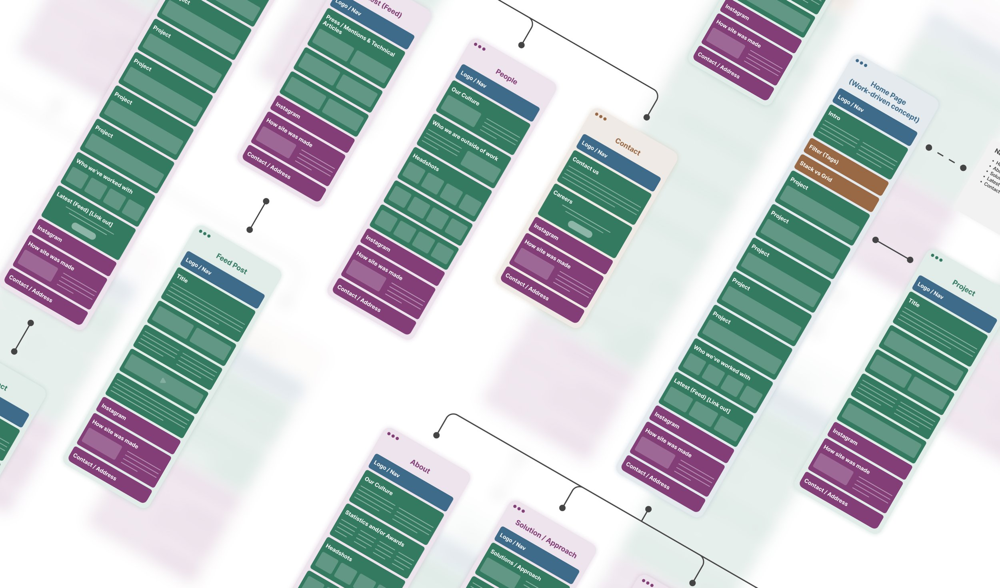
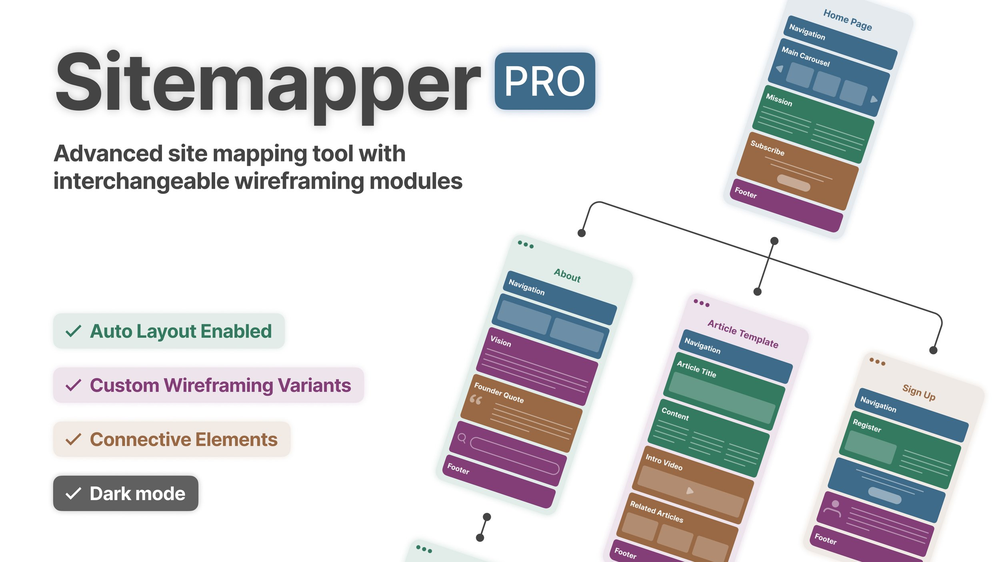
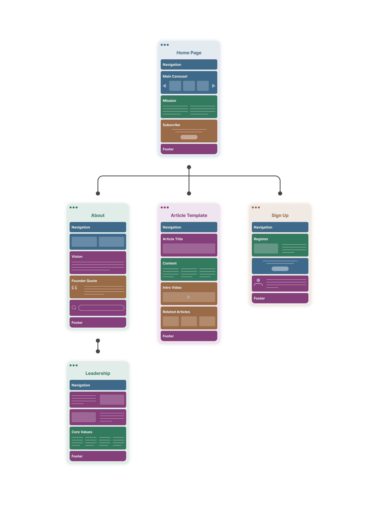
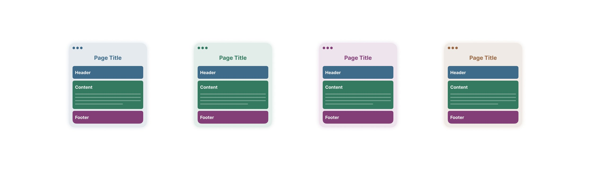
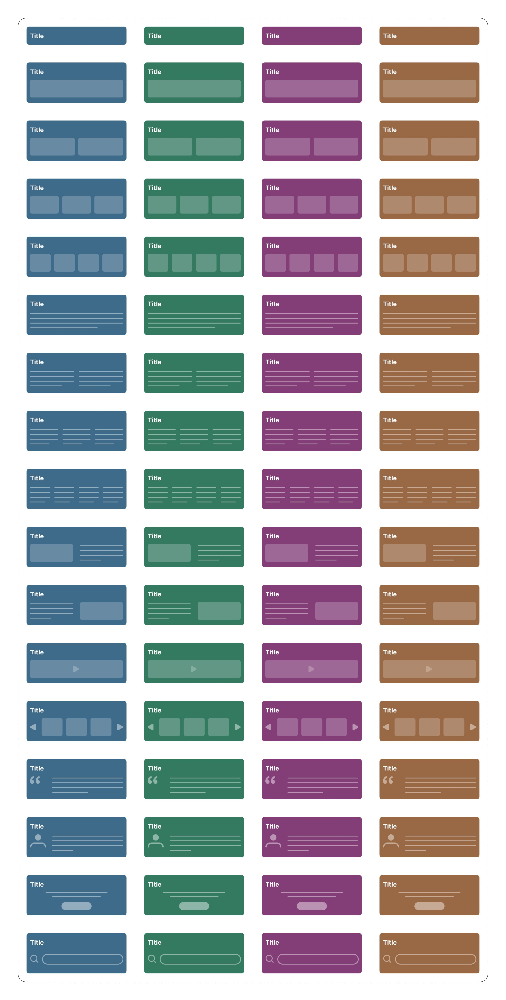

Sitemapper Pro
Sitemapper Pro is a site mapping tool I developed in Figma, available for free download in the Figma community. This tool enables you to create advanced site maps using components with multiple interchangeable wireframe representations, leveraging Figma's auto layout features.
It also includes a set of connective elements for linking site maps, along with a dark mode feature. For more details on how to use the tool, open it in Figma and start building your next site map.



